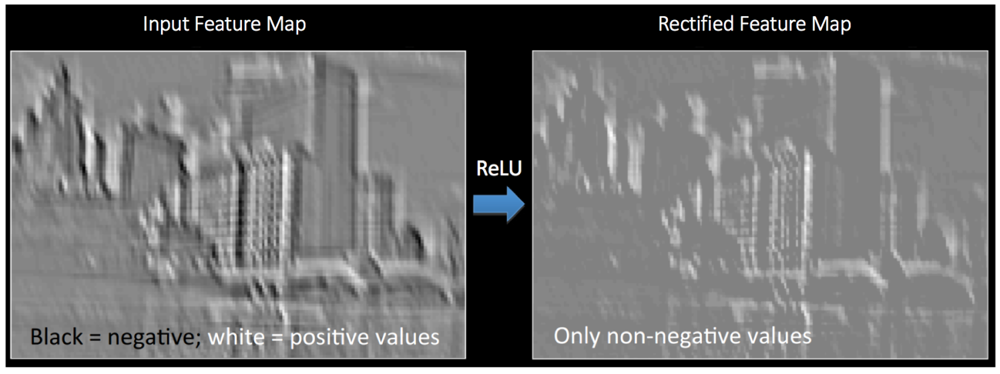

卷积神经网络(Convolutional Neural Networks, ConvNets or CNNs)是一种在图像识别与分类领域被证明特别有效的神经网络。卷积网络已经成功地识别人脸、物体、交通标志，应用在机器人和无人车等载具。
CNN卷积神经网络

卷积层
卷积网络是因为“卷积”操作而得名的。卷积的根本目的是从输入图片中提取特征。卷积用一个小方阵的数据学习图像特征，可以保留像素之间的空间关系。
卷积
3x3矩阵也叫“滤波器”、“核”或“特征探测器”，在原图上滑动滤波器、点乘矩阵所得的矩阵称为“卷积特征”、“激励映射”或“特征映射”。
这里的重点就是，理解滤波器对于原输入图片来说，是个特征探测器。
对于同一张照片，不同的滤波器将会产生不同的特征映射。
卷积核
在实践当中，卷积神经网络在训练过程中学习滤波器的值，当然我们还是要在训练之前需要指定一些参数：滤波器的个数，滤波器尺寸、网络架构等等。滤波器越多，从图像中提取的特征就越多，模式识别能力就越强。
特征映射的尺寸由三个参数控制，我们需要在卷积步骤之前就设定好：
深度(Depth)
深度就是卷积操作中用到的滤波器个数。如图7所示，我们对原始的船图用了三个不同的滤波器，从而产生了三个特征映射。你可以认为这三个特征映射也是堆叠的2d矩阵，所以这里特征映射的“深度”就是3
步幅(Stride)
步幅是每次滑过的像素数。当Stride=1的时候就是逐个像素地滑动。当Stride=2的时候每次就会滑过2个像素。步幅越大，特征映射越小。
补零(Zero-padding)
有时候在输入矩阵的边缘填补一圈0会很方便，这样我们就可以对图像矩阵的边缘像素也施加滤波器。补零的好处是让我们可以控制特征映射的尺寸。补零也叫宽卷积，不补零就叫窄卷积。
卷积层输出计算公式
对于任何给定的卷积层输出大小的计算公式
参数
- 输入图片大小 $W$
- 卷积核大小 $F$
- 步长 $S$
- padding的像素数 $P$
- 输出图片大小 $N$
激活函数
非线性化
每个卷积操作之后，都有一个叫ReLU的附加操作。ReLU的全称是纠正线性单元(Rectified Linear Unit)，是一种非线性操作，其输出如下：
ReLU是以像素为单位生效的，其将所有负值像素替换为0。ReLU的目的是向卷积网络中引入非线性，因为真实世界里大多数需要学习的问题都是非线性的（单纯的卷积操作时线性的——矩阵相乘、相加，所以才需要额外的计算引入非线性）。

输出的新特征映射也叫“纠正”特征映射。（黑色被抹成了灰色）
其他非线性方程比如tanh或sigmoid也可以替代ReLU，但多数情况下ReLU的表现更好。
PoolingLayer 池化层
空间池化（也叫亚采样或下采样）降低了每个特征映射的维度，但是保留了最重要的信息。空间池化可以有很多种形式：最大(Max)，平均(Average)，求和(Sum)等等。
以最大池化为例，我们定义了空间上的邻域（2x2的窗）并且从纠正特征映射中取出窗里最大的元素。除了取最大值以额外，我们也可以取平均值（平均池化）或者把窗里所有元素加起来。实际上，最大池化已经显示了最好的成效。
图中显示了对纠正特征映射的最大池化操作（在卷积+ReLU之后），使用的是2x2的窗。
以2格的步幅(Stride)滑动2x2的窗，并且取每个区域的最大值。图中同样显示了池化可以减少特征映射的维度。
池化的功能
池化的功能室逐步减少输入表征的空间尺寸。特别地，池化
- 使输入表征（特征维度）更小而易操作
- 减少网络中的参数与计算数量，从而遏制过拟合
- 增强网络对输入图像中的小变形、扭曲、平移的鲁棒性（输入里的微小扭曲不会改变池化输出——因为我们在局部邻域已经取了最大值/平均值）。
- 帮助我们获得不因尺寸而改变的等效图片表征。这非常有用，因为这样我们就可以探测到图片里的物体，不论那个物体在哪。
DropOut稀疏层
这是一个比较新的也非常好用的防止过拟合的方法
完全随机选取经过神经网络流一半的数据来训练，在每次训练过程中用0来替代被丢掉的激活值，其它激活值合理缩放
为了减少过拟合，我们在输出层之前加入dropout。一般用一个 placeholder 来代表一个神经元在dropout中被保留的概率。这样我们可以在训练过程中启用dropout，在测试过程中关闭dropout。
Fully Connected Layer，FC，全连接层
连接层(Fully Connected layer)就是使用了softmax激励函数作为输出层的多层感知机(Multi-Layer Perceptron)，其他很多分类器如支持向量机也使用了softmax。
“全连接”表示上一层的每一个神经元，都和下一层的每一个神经元是相互连接的。
分类
卷积层和池化层的输出代表了输入图像的高级特征，全连接层的目的就是用这些特征进行分类，类别基于训练集。
比如下图所示的图像分类任务，有四种可能的类别。（注意，图中没有显示出所有的神经元节点）
非线性组合
除了分类以外，加入全连接层也是学习特征之间非线性组合的有效办法。卷积层和池化层提取出来的特征很好，但是如果考虑这些特征之间的组合，就更好了。
Softmax概率输出
全连接层的输出概率之和为1，这是由激励函数Softmax保证的。Softmax函数把任意实值的向量转变成元素取之0-1且和为1的向量。
FC在整个卷积神经网络中起到“分类器”的作用。如果说卷积层、池化层和激活函数层等操作是将原始数据映射到隐层特征空间的话，全连接层则起到将学到的
分布式特征表示映射到样本标记空间的作用。
CNN卷积神经网络构建过程
CNN训练
卷积网络的训练过程可以概括如下：
- Step 1: 用随机数初始化所有的滤波器和参数/权重
- Step 2: 网络将训练图片作为输入，执行前向步骤（卷积，ReLU，池化以及全连接层的前向传播）并计算每个类别的对应输出概率。
- 假设船图的输出概率是[0.2, 0.4, 0.1, 0.3]
- 因为第一个训练样本的权重都是随机的，所以这个输出概率也跟随机的差不多
- Step 3: 计算输出层的总误差（4类别之和）
- 总误差=$总误差=∑ rac{1}{2}(目标概率−输出概率)^2$
- Step 4: 反向传播算法计算误差相对于所有权重的梯度，并用梯度下降法更新所有的滤波器/权重和参数的值，以使输出误差最小化。
- 权重的调整程度与其对总误差的贡献成正比。
- 当同一图像再次被输入，这次的输出概率可能是[0.1, 0.1, 0.7, 0.1]，与目标[0, 0, 1, 0]更接近了。
- 这说明我们的神经网络已经学习着分类特定图片了，学习的方式是调整权重/滤波器以降低输出误差。
- 如滤波器个数、滤波器尺寸、网络架构这些参数，是在Step 1之前就已经固定的，且不会在训练过程中改变——只有滤波矩阵和神经元突触权重会更新。
以上步骤训练了卷积网络——本质上就是优化所有的权重和参数，使其能够正确地分类训练集里的图片。
CNN预测
当一个新的（前所未见的）的图片输入至卷积网络，网络会执行前向传播步骤并输出每个类别的概率（对于新图像，输出概率用的也是训练过的权重值）。
如果我们的训练集足够大，网络就有望正确分类新图片，获得良好的泛化(generalization)能力。
参考
卷积：如何成为一个很厉害的神经网络
mnist写字卷积过程3D可视化
keras实现mmmnist识别
LeNet-5卷积参数
mimnistinear/mlp/cnn/rnn的keras实现